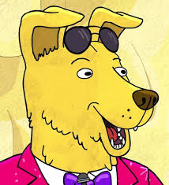
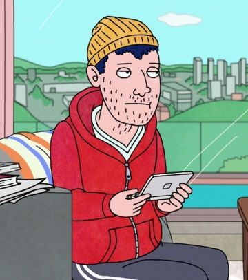
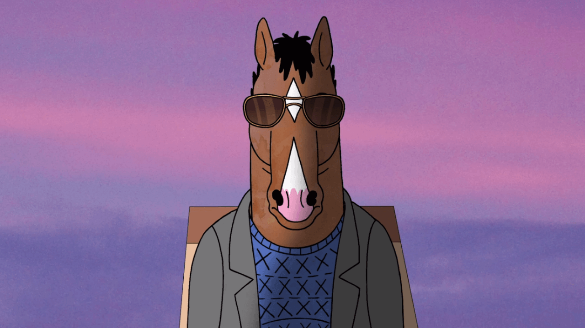

Van olyan hogy túl késő?
Egy világ ahol emberek és állatok egyenértékűek
Hollywoo(d) több mint pénz és csillogás
Egy önutáló, alkoholista ló aki már az 50es éveit rújga. Színészi karrierje a 90es években elérte a csúcsát a Horsin' Around című sitcom-al. Ő a főhősünk.
Princess Carolyn
Bojack ügynöke, és ex-barátnője.
Komoly és fáradhatatlan. Nehezen tudja egyensúlyban tartani a munkáját,
magánéletét és a Bojack-el való foglalkozást.|  |  | |
| Diane Nguyen | Mr. Peanutbutter | Todd Chavez |
| Ésszerű, félreértett vietnámi feminista író, aki Bojack helyett írja az önéletrajzi könyvét. | Mindíg boldog, energiával teli labrador, Bojack volt riválisa. Felnéz Bojack-re, de ő nem viszonozza a rajongását. | Munkanélküli, lusta, de jószívű srác. A sorozat kezdetét öt évvel megelőzve került Bojack lakásába egy házibuli után. |
| Évad | Epizódok | Megjelenés | |
| 1 | 12 | Augusztus 22, 2014 | |
| Karácsonyi különkiadás | December 19, 2014 | ||
| 2 | 12 | Júluis 17, 2015 | |
| 3 | 12 | Júluis 22, 2016 | |
| 4 | 12 | Szeptember 8, 2017 | |
| 5 | 12 | Szeptember 14, 2018 | |
Gyátrásvezetők
Producerek
Szinkronhangok
A főcímdalt Patrick Carney komponálta, a "tde Black Keys" blues-rock duó dobosa, Ralph Carney nagybácsijával.
 A stáblista zene "Back in tde 90s (BoJack's tdeme)"-et a Grouplove indie-pop banda játssza, a zenét Jesse Novak komponálta. A sorozatban megjelenő számokat 2017 Szeptermber 8.án kiadták a Lakeshore Records oldalon, a negyedik évad kezdetével egyidőben. Ez tartalmazza a főcímdal teljes verzióját, "A Horse witd No Name" Patrick Carney és Michelle Branch feldolgozásában, Sextina Aquafina "Get Dat Fetus, Kill Dat Fetus" címú dalát, a Horsin' Around és Mr. Peanutbutter's House zenéit és a "Fish Out of Water" epizód teljes előadását.
| Évad | Kritikus fogadtatás | ||
| Rotten Tomatoes | Metacritic | ||
| 1 | 67% (24 vélemény) | 59 (13 vélemény) | |
| 2 | 100% (18 vélemény) | 90 (7 vélemény) | |
| 3 | 100% (31 vélemény) | 89 (12 vélemény) | |
| 4 | 97% (35 vélemény) | 87 (5 vélemény) | |
| 5 | 98% (34 vélemény) | 92 (6 vélemény) | |
| Átlag | 92% | 83.40 | |